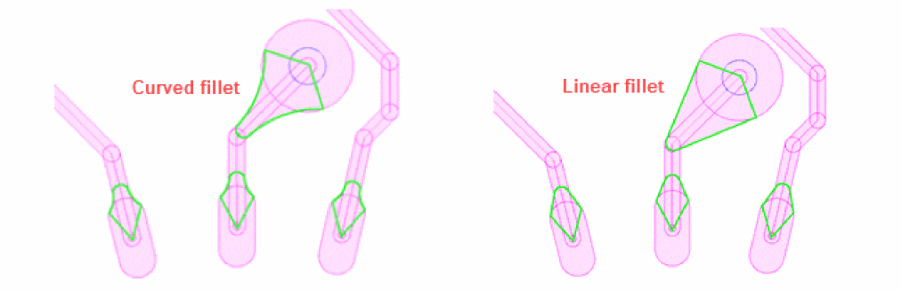
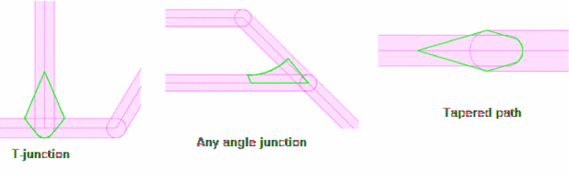
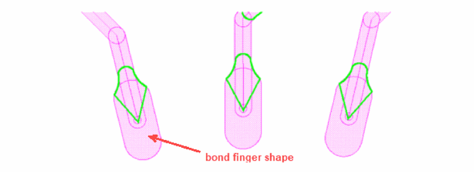
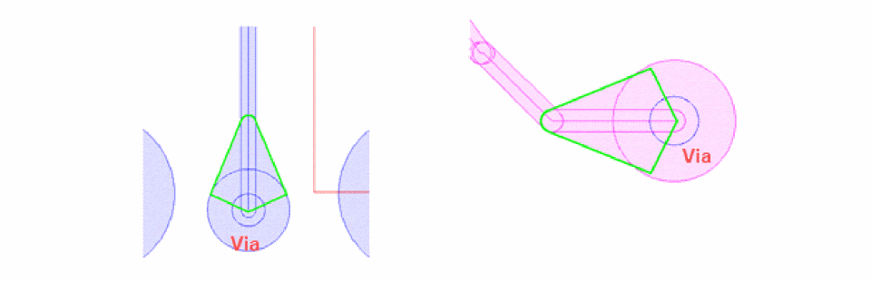

Fillet Creation Between Curved Path and Other Objects
A fillet is an extra etch added to improve wire to pad or wire to via connection. It is created on analog and high-speed circuits, or areas of a design where shock and vibration to the design might disrupt connections. In Virtuoso, a fillet is created as a curved polygon.
A fillet is created from the center of the shape to the intersection of the shape and can be either curved or linear.

A fillet is inserted between a curved path and other objects, such as other curved paths, pins, vias, and bond fingers.
-
Other Curved Paths
The following figure shows fillet creation between a curved path and other curved paths, including T-junctions, any angle crossing, or intersections. Tapered paths are also considered.
 -
Bond Fingers
The following figure shows fillets created between a curved path and bond fingers.
 -
Pins
The following figure shows a fillet created between a curved path and a pin.
-
Vias
The following figure shows a fillet created between a curved path and a via.

Fillets are created using the Fillet icon on the Metal Density toolbar and the scope and parameters are defined using the Fillet tab on the Metal Density Options form.
Related Topics
Return to top